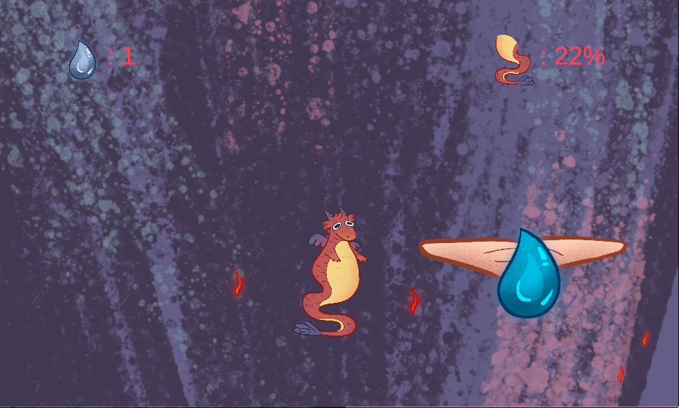

Project Description
This game was created during Bit Jam Wrocław in a 24-hour time frame. It features a vertical platforming mechanic where the player must jump higher and higher using a tail bounce mechanic, inspired by Pogostick. The movement system requires precise timing and control to progress through the level. The player is constantly chased by fire. Scattered throughout the level are water droplets, which can be collected to slow down the advancing flames. If the fire catches up to the player, the game is lost. Inspired by Icy Tower and Jump King.
Gallery

Links
Itch.io game page: tojak.itch.io/dragon-gum